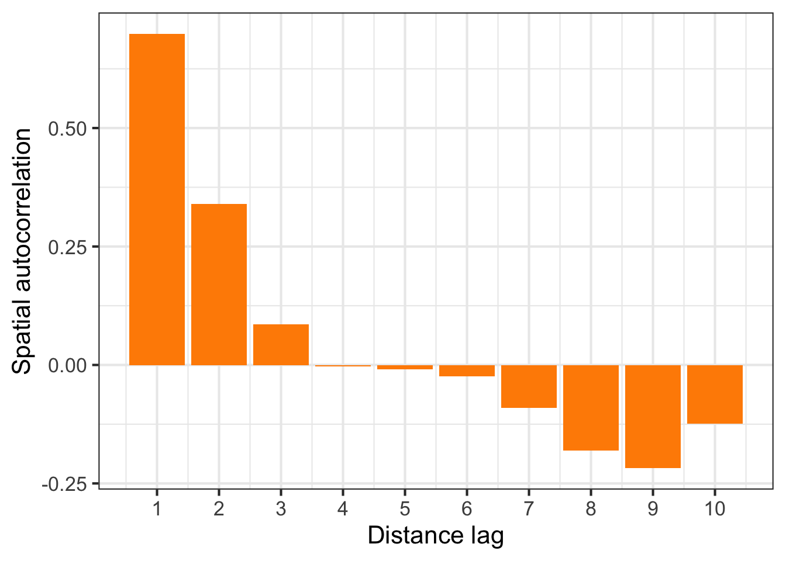
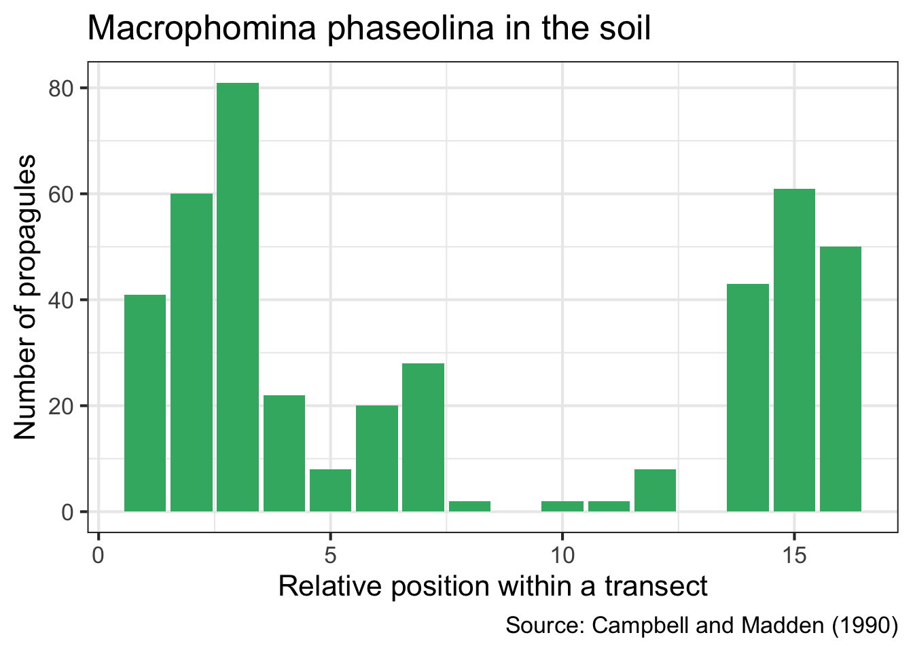
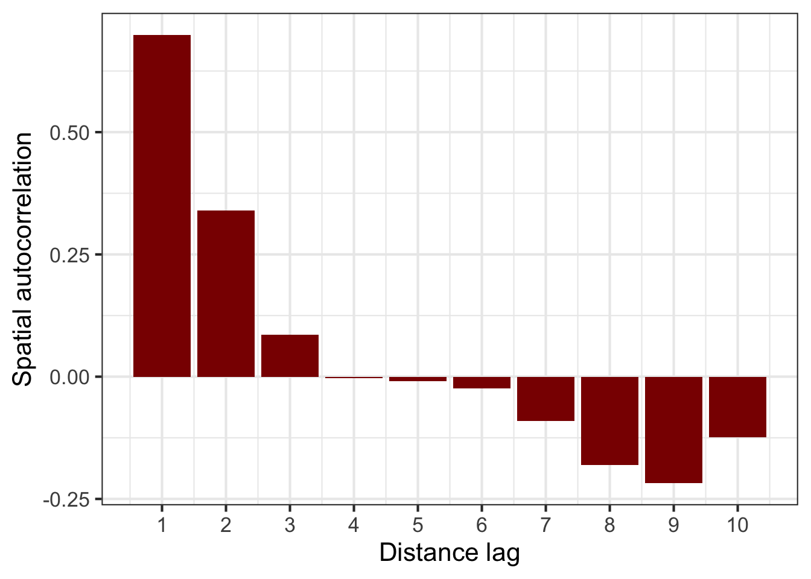
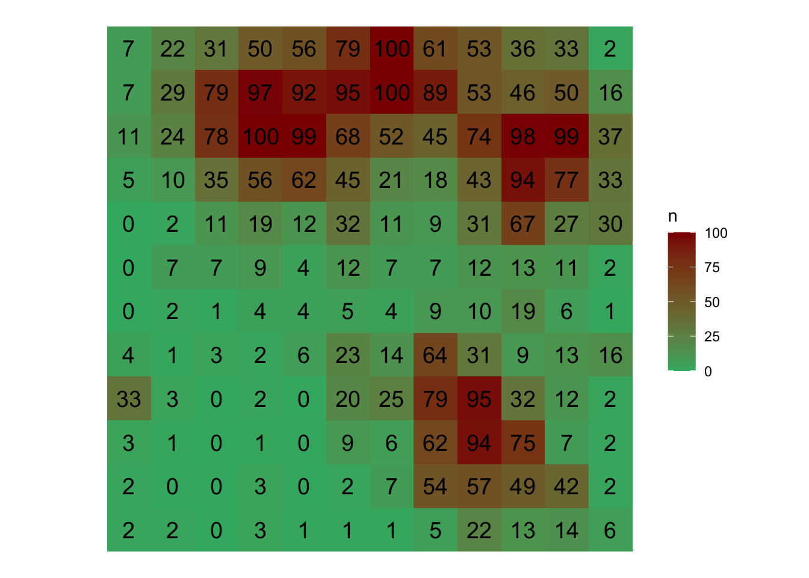

This is a work in progress that is currently undergoing heavy technical editing and copy-editing
A range of techniques, most based on statistical tests, can be used to detect deviations from randomness in space and the choice of the methods depends on the scale of observation. Usually, more than one test is applied for the same or different scales of interest depending on how the data are collected. The several statistical tests can be classified based on the spatial scale and type of data (binary, count, etc) collected, but mainly if the spatial location of the unit is known (mapped) or not known (sampled). Following Madden et al. (2007), two major groups can be formed. The sparsely sampled (incidence or count data) data or intensively mapped (binary or grouped data) data.
10.1 Intensively mapped
10.1.1 Binary data
In this situation the individual plants are mapped, meaning that their relative positions to one another are known. It is the case when a census is used to map presence/absence data. The status of each unit (usually a plant) is noted is a binay variable. The plant is either diseased (D or 1) or non-diseased or healthy (H or 0). Several statistical tests can be used to detect a deviation from randomness. The most commonly used tests are runs, doublets and join count.
10.1.1.1 Runs test
A run is defined as a succession of one or more diseased or healthy plants, which are followed and preceded by a plant of the other disease status or no plant at all. There would be few runs if there is an aggregation of diseased or healthy plants and a large number of runs for a random mixing of diseased and healthy plants.
Let’s create a vector of binary (0 = non-diseased; 1 = diseased) data representing a crop row with 20 plants and assign it to y. For plotting purposes, we make a dataframe for more complete information.
── Conflicts ────────────────────────────────────────── tidyverse_conflicts() ──
x dplyr::filter() masks stats::filter()
x dplyr::lag() masks stats::lag()
theme_set(theme_bw(base_size =16))
y1 <-c(1,1,1,0,0,0,0,0,1,0,0,0,0,1,1,0,0,0,1,1)x1 <-c(1:20) # position of each plantz1 <-1row1 <-data.frame(x1, y1, z1) # create a dataframe
We can then visualize the series using ggplot and count the number of runs as 7, aided by the color used to identify a run.
row1 |>ggplot(aes(x1, z1, label = x1, color =factor(y1)))+geom_point(shape =15, size =6)+theme_void()+scale_x_continuous(breaks =max(z1))+scale_color_manual(values =c("darkred", "MediumSeaGreen"))+geom_text(vjust =0, nudge_y =0.5)+coord_fixed()+ylim(-0.5,2.5)+theme(legend.position ="right")+labs(color ="Status", title ="Sequence of diseased (1) or non-diseased (0) units (plants)", subtitle ="The numbers represent the position of the unit")
We can write a code in R and create a function named oruns.test for the ordinary runs test.
oruns.test <-function(x) {# identify the sequenceS <- x # Compute the number or runsU =max(cumsum(c(1, diff(S)!=0)))# Compute the number of diseased plantsm =sum(S)# Count the total number of plantsN =length(S)# Calculate the number of expected runsEU =1+ (2* m*(N - m)/N)# Calculate the standard deviation in the samplesU =sqrt(2* m * (N - m) * (2* m *(N-m)-N)/ (N^2*(N-1)))# Calculate the z-valueZ = (U - EU)/sU# Obtain the p-value for the Zpvalue <- (2*pnorm(abs(Z), lower.tail=FALSE))# test if Z is lower than 1.64result <-ifelse(Z <1.64, c("clustering"), c("randomness"))# Print the resultsprint(paste("There are", U,"runs. The number of expected runs is", round(EU,1), "P-value:",round(pvalue,6), ". Alternative hypothesis: non-randomness"))}
We can now run the test for the example series above.
oruns.test(row1$y1)
[1] "There are 7 runs. The number of expected runs is 10.6 P-value: 0.084166 . Alternative hypothesis: non-randomness"
There are built-in functions in R packages that allow for running the ordinary runs test. Let’s load the packages and runt the test. Note that the results of the runs.test is the same as the one produced by our custom function.
Runs Test for Randomness
data: row1$y1
runs = 7, m = 12, n = 8, p-value = 0.09595
alternative hypothesis: true number of runs is not equal the expected number
10.1.1.2 Doublets
Doublet analysis is used to compare the observed number or adjacent diseased plants, a doublet (DD or 11), to the number expected if the disease were randomly distributed in the yard. If the observed number is greater than the expected number, contagion within the field is suspected.
Let’s manually produce a code to execute the doublets test. To facilitate, we can create a function and name it doublets.test. The only argument needed is the vector of binary data.
doublets.test <-function(x) {# Identify the sequenceS <- x# Compute the number of doublets Dbmatrix <-cbind(S[-length(S)], S[-1])pairs <-table(data.frame(matrix))Db <- pairs[2,2]# Count the number of diseased plantsN <-length(S) # Count the number of total plantsm =sum(S) # Expected number of doubletsEDb = m *((m -1)/N)# Standard deviation SDb =sqrt ( EDb * (1- (2/ N)))# Calculate the Z-value ZDb = (Db - EDb)/ SDb # two-sided P-value calculationpvalue <- (2*pnorm(abs(ZDb), lower.tail =FALSE))# Result of the testresult <-ifelse(abs(ZDb) >=1.64, c("aggregation or clustering"), c("randomness")) # Print the resultsprint(paste("There are",Db,"doublets. The number of expected doublets is",EDb,".","P-value:", round(pvalue,4), ". Alternative hypothesis: non-randomness"))}
# Run the function calling the vectordoublets.test(row1$y1)
[1] "There are 4 doublets. The number of expected doublets is 2.8 . P-value: 0.4497 . Alternative hypothesis: non-randomness"
10.1.1.3 Join count
In this analysis, two adjacent plants may be classified by the type of join that links them: D-D, H-H or H-D. The orientation(s) of interest (along rows, across rows, diagonally, or a a combination o these) should be specified. The number of joins of the specified type in the orientation(s) of interest is then counted. The question is whether the observed join-count is large (or small) relative to that expected for a random pattern. The join-count statistics provides a basic measure of spatial autocorrelation.
In R, we can use the join.count function of the spdep package to perform a joint count test. First we need to create the series of binary data from top to bottom and left to right. The data are shown in Fig. 9.13 in page 260 of the book chapter on spatial analysis (Madden et al. 2017). In the example, there are 5 rows and 5 columns. This will be informed later to run the test.
# Enter the dataS2 <-c(1,0,1,1,0,1,1,0,0,0,1,0,1,0,0,1,0,0,1,0,0,1,0,1,1)
Visualize the two-dimensional array:
# Convert to raster mapS2 <- raster::raster(matrix(S2, 5 ,5))# Convert to data framemapS3 <- raster::as.data.frame(mapS2,xy=TRUE)# Map using ggplotmapS3 |>ggplot(aes(x, y, label = layer, fill =factor(layer)))+geom_tile(color ="black", size =0.5)+theme_void()+geom_text(size =5, color ="white")+labs(fill ="Status")+scale_fill_manual(values =c("MediumSeaGreen", "darkred"))
Load the library
library(spdep)
First, we need to generate a list of neighbors (nb) for a grid of cells. This is performed with the cell2nb function by informing the number of rows and columns. The argument “rook” means shared edge, but it could be the “queen”, for shared edge or vertex. We can use the default.
nb <-cell2nb(nrow =5, ncol =5, type="rook")
The joincount.test function runs the BB join count test for spatial autocorrelation. From the function description, the method uses a spatial weights matrix in weights list form for testing whether same-status joins occur more frequently than would be expected if the zones were labelled in a spatially random way. We need to inform the sequence as factor and the nb object we created previously.
joincount.test(factor(S2), nb2listw(nb))
Join count test under nonfree sampling
data: factor(S2)
weights: nb2listw(nb)
Std. deviate for 0 = -0.58266, p-value = 0.7199
alternative hypothesis: greater
sample estimates:
Same colour statistic Expectation Variance
2.9583333 3.2500000 0.2505797
Join count test under nonfree sampling
data: factor(S2)
weights: nb2listw(nb)
Std. deviate for 1 = -0.66841, p-value = 0.7481
alternative hypothesis: greater
sample estimates:
Same colour statistic Expectation Variance
2.4166667 2.7500000 0.2486957
The function returns a list with a class for each of the status (in this case 0 and 1) with several components. We should look at the P-value. The alternative hypothesis (greater) is that the same status joins occur more frequently than expected if they were labelled in a spatial random way. In this case, we do not reject the null hypothesis of randomness.
We can run the ordinary runs and doublets tests, which only considers the adjacent neighbor, for the same series and compare the results.
oruns.test(S2)
[1] "There are 17 runs. The number of expected runs is 13.5 P-value: 0.149673 . Alternative hypothesis: non-randomness"
doublets.test(S2)
[1] "There are 3 doublets. The number of expected doublets is 5.28 . P-value: 0.3009 . Alternative hypothesis: non-randomness"
Let’s repeat the procedure using the second array of data shown in the book chapter, for which the result is different. In this case, there is evidence to reject the null hypothesis, indicating aggregation of plants.
Join count test under nonfree sampling
data: factor(S3)
weights: nb2listw(nb)
Std. deviate for 0 = 4.2451, p-value = 1.093e-05
alternative hypothesis: greater
sample estimates:
Same colour statistic Expectation Variance
5.3750000 3.2500000 0.2505797
Join count test under nonfree sampling
data: factor(S3)
weights: nb2listw(nb)
Std. deviate for 1 = 4.5953, p-value = 2.16e-06
alternative hypothesis: greater
sample estimates:
Same colour statistic Expectation Variance
5.0416667 2.7500000 0.2486957
oruns.test(S3)
[1] "There are 8 runs. The number of expected runs is 13.5 P-value: 0.024904 . Alternative hypothesis: non-randomness"
We can apply these tests for a real example epidemic data provided by the epiphy R package. Let’s work with part of the intensively mapped data on the incidence of tomato spotted wilt virus (TSWV) disease in field trials reported by Cochran (1936) and Bald (1937). First, we need to load the library and then assign one dataframe (the dataset has two dataframes) of the dataset tomato_tswv to a new dataframe called tswv_1929.
library(epiphy) library(cowplot) # theming the ggplottswv_1929 <- tomato_tswv$field_1929head(tswv_1929)
x y t i n
1 1 1 1 0 1
2 1 2 1 1 1
3 1 3 1 0 1
4 1 4 1 1 1
5 1 5 1 0 1
6 1 6 1 0 1
The inspection of the first rows of the dataframe shows five variables where x and y are spatial grid coordinates, t is assessment time, i is the status of the plant (0 = healthy, 1 = diseased) and n is the sampling unit size (here all one). Let’s visualize these data for each sampling time.
tswv_1929 |>ggplot(aes(x, y, fill =factor(i)))+geom_tile()+coord_fixed()+scale_fill_manual(values =c("MediumSeaGreen", "darkred"))+facet_wrap(~ t)+labs(fill ="Status")

Check the number of rows (y) and columns (x) for further preparing the neighbor object for the join count statistics.
tswv_1929 |> dplyr::select(x, y) |>summary()
x y
Min. : 1.00 Min. : 1.00
1st Qu.: 6.75 1st Qu.:15.75
Median :12.50 Median :30.50
Mean :12.50 Mean :30.50
3rd Qu.:18.25 3rd Qu.:45.25
Max. :24.00 Max. :60.00
There are 60 rows and 24 columns.
# Neighbor gridnb1 <-cell2nb(nrow =60, ncol =24, type="rook")# Pull the binary sequence of time 1S1 <- tswv_1929 |>filter(t =="1") |>pull(i)joincount.test(factor(S1), nb2listw(nb1))
Join count test under nonfree sampling
data: factor(S1)
weights: nb2listw(nb1)
Std. deviate for 0 = -0.28351, p-value = 0.6116
alternative hypothesis: greater
sample estimates:
Same colour statistic Expectation Variance
482.000000 482.578874 4.169132
Join count test under nonfree sampling
data: factor(S1)
weights: nb2listw(nb1)
Std. deviate for 1 = -0.059497, p-value = 0.5237
alternative hypothesis: greater
sample estimates:
Same colour statistic Expectation Variance
23.458333 23.578874 4.104614
We can apply the join count test for time 2 and time 3. Results show that the pattern changes from random to aggregate over time.
# Pull the binary sequence of time 1S2 <- tswv_1929 |>filter(t =="2") |>pull(i)joincount.test(factor(S2), nb2listw(nb1))
Join count test under nonfree sampling
data: factor(S2)
weights: nb2listw(nb1)
Std. deviate for 0 = 0.35872, p-value = 0.3599
alternative hypothesis: greater
sample estimates:
Same colour statistic Expectation Variance
317.000000 315.900625 9.392312
Join count test under nonfree sampling
data: factor(S2)
weights: nb2listw(nb1)
Std. deviate for 1 = 0.34604, p-value = 0.3647
alternative hypothesis: greater
sample estimates:
Same colour statistic Expectation Variance
82.958333 81.900625 9.342754
# Pull the binary sequence of time 1S3 <- tswv_1929 |>filter(t =="3") |>pull(i)joincount.test(factor(S3), nb2listw(nb1))
Join count test under nonfree sampling
data: factor(S3)
weights: nb2listw(nb1)
Std. deviate for 0 = 1.8541, p-value = 0.03186
alternative hypothesis: greater
sample estimates:
Same colour statistic Expectation Variance
136.12500 129.92773 11.17243
Join count test under nonfree sampling
data: factor(S3)
weights: nb2listw(nb1)
Std. deviate for 1 = 1.7275, p-value = 0.04204
alternative hypothesis: greater
sample estimates:
Same colour statistic Expectation Variance
243.70833 237.92773 11.19743
10.1.2 Grouped data
If the data are intensively mapped, meaning that the spatial locations of the sampling units are known, we are not limited to analyse presence/absence (incidence) only data at the unit level. The sampling units may be quadrats where the total number of plants and the number of disease plants (or number of pathogen propagules) are known. Alternatively, it could be a continuous measure of severity. The question here, similar to the previous section, is whether a plant being diseased makes it more (or less) likely that neighboring plants will be diseased. If that is the case, diseased plants are exhibiting spatial autocorrelation. The most common methods are autocorrelation (known as Moran’s I), semivariance and SADIE (an alternative approach to autocorrelation.)
10.1.2.1 Autocorrelation
Spatial autocorrelation analysis provides a quantitative assessment of whether a large value of disease intensity in a sampling unit makes it more (positive autocorrelation) or less (negative auto- correlation) likely that neighboring sampling units tend to have a large value of disease intensity (Madden et al. 2017).
We will illustrate the method by reproducing the example provided in page 264 of the chapter on spatial analysis (Madden et al. 2017), which was extracted from table 11.3 of Campbell and Madden (1990). The data represent a single transect with the number of Macrophomia phaseolina propagules per 10 g air-dry soil recorded in 16 contiguous quadrats across a field.
We can produce a plot to visualize the number of propagules across the transect.
mp |>ggplot(aes(i, y))+geom_col(fill ="MediumSeaGreen")+labs(x ="Relative position within a transect", y ="Number of propagules",title ="Macrophomina phaseolina in the soil",caption ="Source: Campbell and Madden (1990)")

To calculate the autocorrelation coefficient in R, we can use the ac function of the tseries package.
library(tseries)ac_mp <-acf(mp$y, lag =5, pl =FALSE)ac_mp
Autocorrelations of series 'mp$y', by lag
0 1 2 3 4 5
1.000 0.586 0.126 -0.033 -0.017 -0.181
Let’s store the results in a dataframe to facilitate visualization using ggplot.
The values we obtained here are not the same but quite close to the values reported in Madden et al. (2007). For the transect data, the calculated coefficients in the book example for lags 1, 2 and 3 are 0.625, 0.144, and - 0.041. The conclusion is the same, the smaller the distance between sampling units, the stronger is the correlation between the count values.
The method above is usually referred to Moran’s I (Moran, 1950). Let’s use another example dataset from the book to calculate the Moran’s I in R. The data is shown in page 269 of the book. The data represent the number of diseased plants per quadrat (out of a total of 100 plants in each) in 144 quadrats. It was based on an epidemic generated using the stochastic simulator of Xu and Madden (2004). The data is stored in a csv file.
epi <-read_csv("data/xu-madden-simulated.csv")# Transform from wide to long format # Pull the n variable to store as a vectorepi1 <- epi |>pivot_longer(2:13,names_to ="y",values_to ="n") |>pull(n)
Using moran function of the spdep R package.
set.seed(100)library(spdep)
The cell2nb function creates the neighbor list with 12 rows and 12 columns, which is how the 144 quadrats are arranged.
nb <-cell2nb(12, 12, type="queen", torus =FALSE)
The nb2listw function supplements a neighbors list with spatial weights for the chosen coding scheme. We use the default W, which is the row standardized (sums over all links to n). We then create the col.W neighbor list.
col.W <-nb2listw(nb, style="W")
The Moran’s I statistic is given by the moran function
moran(x = epi1, # numeric vectorlistw = col.W, # the nb listn =12, # number of zonesS0 =Szero(col.W)) # global sum of weights
$I
[1] 0.05818595
$K
[1] 2.878088
The Moran’s test for spatial autocorrelation uses spatial weights matrix in weights list form.
moran.test(x = epi1, listw = col.W)
Moran I test under randomisation
data: epi1
weights: col.W
Moran I statistic standard deviate = 15.919, p-value < 2.2e-16
alternative hypothesis: greater
sample estimates:
Moran I statistic Expectation Variance
0.698231416 -0.006993007 0.001962596
correl_I <-sp.correlogram(nb, epi1, order =10,method ="I", zero.policy =TRUE)
We can generate a correlogram using the output of the sp.correlogram function. Note that the figure below is very similar to the one shown in Figure 91.5 in page 269 of the book chapter (Madden et al. 2017). Let’s store the results in a dataframe.
df_correl <-data.frame(correl_I$res) |>mutate(lag =c(1:10))# Show the spatial autocorrelation for 10 distance lagsround(df_correl$X1,3)
df_correl |>ggplot(aes(lag, X1))+geom_col(fill ="MediumSeaGreen")+scale_x_continuous(n.breaks =10)+labs(x ="Distance lag", y ="Spatial autocorrelation")

10.1.2.2 Semivariance
Semi-variance is a key quantity in geostatistics. This differs from spatial autocorrelation because distances are usually measured in discrete spatial lags. The semi-variance can be defined as half the variance of the differences between all possible points spaced a constant distance apart.
The semi-variance at a distance d = 0 will be zero, because there are no differences between points that are compared to themselves. However, as points are compared to increasingly distant points, the semi-variance increases. At some distance, called the Range, the semi-variance will become approximately equal to the variance of the whole surface itself. This is the greatest distance over which the value at a point on the surface is related to the value at another point. In fact, when the distance between two sampling units is small, the sampling units are close together and, usually, variability is low. As the distance increases, so (usually) does the variability.
Results of semi-variance analysis are normally presented as a graphical plot of semi-variance against distance, which is referred to as a semi-variogram. The main characteristics of the semi-variogram of interest are the nugget, the range and the sill, and their estimations are usually based on an appropriate (non-linear) model fitted to the data points representing the semi-variogram.
For the semi-variance, we will use the variog function of the geoR package. We need the data in the long format (x, y and z). Let’s reshape the data to the long format and store it in epi2 dataframe.
SADIE (spatial analysis by distance indices) is an alternative to autocorrelation and semi-variance methods described previously, which has found use in plant pathology (Madden et al. 2017; Xu and Madden 2004; Li et al. 2011). Similar to those methods, the spatial coordinates for the disease intensity (count of diseased individuals) or pathogen propagules values should be provided.
SADIE quantifies spatial pattern by calculating the minimum total distance to regaularity. That is, the distance that individuals must be moved from the starting point defined by the observed counts to the end point at which there is the same number of individuals in each sampling unit. Therefore, if the data are highly aggregated, the distance to regularity will be large, but if the data are close to regular to start with, the distance to regularity will be smaller.
The null hypothesis to test is that the observed pattern is random. SADIE calculates an index of aggregation (Ia). When this is equal to 1, the pattern is random. If this is greater than 1, the pattern is aggregated. Hypothesis testing is based on the randomization procedure. The null hypothesis of randomness, with an alternative hypothesis of aggregation.
An extension was made to quantify the contribution of each sampling unit count to the observed pattern. Regions with large counts are defined as patches and regions with small counts are defined as gaps. For each sampling unit, a clustering index is calculated and can be mapped.
In R, we can use the sadie function of the epiphy package. The function computes the different indices and probabilities based on the distance to regularity for the observed spatial pattern and a specified number of random permutations of this pattern. To run the analysis, the dataframe should have only three columns: the first two must be the x and y coordinates and the third one the observations. Let’s continue working with the simulated epidemic dataset named epi2. We can map the original data as follows:
epi2 |>ggplot(aes(x, y, label = n, fill = n))+geom_tile()+geom_text(size =5)+theme_void()+coord_fixed()+scale_fill_gradient(low ="MediumSeaGreen", high ="darkred")

library(epiphy)sadie_epi2 <-sadie(epi2)
Computation of Perry's indices:
sadie_epi2
Spatial Analysis by Distance IndicEs (sadie)
Call:
sadie.data.frame(data = epi2)
Ia: 2.4622 (Pa = < 2.22e-16)
The simple output shows the Ia value and associated P-value. As suggested by the low value of the P-value, the pattern is highly aggregated. The summary function provides a more complete information such as the overall inflow and outflow measures. A dataframe with the clustering index for each sampling unit is also provided using the summary function.
summary(sadie_epi2)
Call:
sadie.data.frame(data = epi2)
First 6 rows of clustering indices:
x y i cost_flows idx_P idx_LMX prob
1 1 1 2 -11.382725 -7.2242617 NA NA
2 1 2 2 -9.461212 -6.2258877 NA NA
3 1 3 3 -7.299482 -5.3390880 NA NA
4 1 4 33 1.000000 0.8708407 NA NA
5 1 5 4 -5.830952 -3.6534511 NA NA
6 1 6 0 -5.301329 -2.9627172 NA NA
Summary indices:
overall inflow outflow
Perry's index 2.495346 -2.811023 2.393399
Li-Madden-Xu's index NA NA NA
Main outputs:
Ia: 2.4622 (Pa = < 2.22e-16)
'Total cost': 201.6062
Number of permutations: 100
The plot function allows to map the clustering indices and so to identify regions of patches (red, outflow) and gaps (blue, inflow).
plot(sadie_epi2)
A isocline plot can be obtained by setting the isocline argument as TRUE.
plot(sadie_epi2, isoclines =TRUE)
10.2 Sparsely sampled data
Different from intensively mapped data, sparsely sampled data do not contain information about the spatial location of the units, and so it is not taken into account in the analysis. The analysis of sparsely sampled data usually involves characterizing the extent of variability in the mean level of disease intensity per sampling unit (Madden et al. 2017). There are two types of approaches to analyse these data in the context of spatial patterns of plant disease epidemics: 1) testing the goodness of fit to statistical probability distributions and 2) calculating indices of aggregation. These will be discussed further separated depending on the nature of the data, whether count or incidence (proportion), for which specific distributions are assumed to describe the data.
10.2.1 Count data
10.2.1.1 Fit to distributions
Two statistical distributions can be adopted as reference for the description of random or aggregated patterns of disease data in the form of counts of infection within sampling units. Take the count of lesions on a leaf, or the count of diseased plants on a quadrat, as an example. If the presence of a lesion/diseased plant does not increase or decrease the chance that other lesions/diseased plants will occur, the Poisson distribution describes the distribution of lesions on the leaf. Otherwise, the negative binomial provides a better description.
Let’s work with the previous simulation data of 144 quadrats with a variable count of diseased plants per quadrat (in a maximum of 100). Notice that we won’t consider the location of each quadrat as in the previous analyses of intensively mapped data. We only need the vector with the number of infected units per sampling unit.
The epiphy package provides a function called fit_two_distr, which allows fitting these two distribution for count data. In this case, either randomness assumption (Poisson distributions) or aggregation assumption (negative binomial) are made, and then, a goodness-of-fit comparison of both distributions is performed using a log-likelihood ratio test. The function requires a dataframe created using the count function where the number of infection units is designated as i. It won’t work with a single vector of numbers. We create the dataframe using:
data_count <- epi2 |>mutate(i = n) |># create i vector epiphy::count() # create the map object of count class
We can now run the function that will look fo the the vector i. The function returns a list of four components including the outputs of the fitting process for both distribution and the result of the log-likelihood ratio test, the llr.
The very low value of the P-value of the LLR test suggest that the negative binomial provides a better fit to the data. The plot function allows for visualizing the expected random and aggregated frequencies together with the observed frequencies. The number of breaks can be adjusted as indicated.
plot(fit_data_count, breaks =5)
See below another way to plot by extracting the frequency data (and pivoting from wide to long format) from the generated list and using ggplot. Clearly, the negative binomial is a better description for the observed count data.
Li, B., Madden, L. V., and Xu, X. 2011. Spatial analysis by distance indices: an alternative local clustering index for studying spatial patterns. Methods in Ecology and Evolution. 3:368–377 Available at: http://dx.doi.org/10.1111/j.2041-210x.2011.00165.x.
Madden, L. V., Hughes, G., and van den Bosch, F., eds. 2017. CHAPTER 9: Spatial aspects of epidemicsIII: Patterns of plant disease. In The American Phytopathological Society, p. 235–278. Available at: http://dx.doi.org/10.1094/9780890545058.009.
Xu, X.-M., and Madden, L. V. 2004. Use of SADIE statistics to study spatial dynamics of plant disease epidemics. Plant Pathology. 53:38–49 Available at: http://dx.doi.org/10.1111/j.1365-3059.2004.00949.x.